This can be used to simulate fires, seed dispersal, calculation of iterative,
concentric landscape values (symmetric or asymmetric) and many other things.
Essentially, it starts from a collection of cells (loci) and spreads
to neighbours, according to the directions and spreadProb arguments.
This can become quite general, if spreadProb is 1 as it will expand
from every loci until all cells in the landscape have been covered.
With id set to TRUE, the resulting map will be classified
by the index of the cell where that event propagated from.
This can be used to examine things like fire size distributions.
NOTE: See also spread2(), which is more robust and can be
used to build custom functions.
However, under some conditions, this spread function is faster.
The two functions can accomplish many of the same things, and key differences are internal.
spread(
landscape,
loci = NA_real_,
spreadProb = 0.23,
persistence = 0,
mask = NA,
maxSize = 100000000L,
directions = 8L,
iterations = 1000000L,
lowMemory = NULL,
returnIndices = FALSE,
returnDistances = FALSE,
mapID = NULL,
id = FALSE,
plot.it = FALSE,
spreadProbLater = NA_real_,
spreadState = NA,
circle = FALSE,
circleMaxRadius = NA_real_,
stopRule = NA,
stopRuleBehavior = "includeRing",
allowOverlap = FALSE,
asymmetry = NA_real_,
asymmetryAngle = NA_real_,
quick = FALSE,
neighProbs = NULL,
exactSizes = FALSE,
relativeSpreadProb = FALSE,
...
)Arguments
- landscape
A
RasterLayerorSpatRasterobject. This defines the possible locations for spreading events to start and spread into. This can also be used as part ofstopRule.- loci
A vector of locations in
landscape. These should be cell indices. If user has x and y coordinates, these can be converted withcellFromXY().- spreadProb
Numeric,
RasterLayer, orSpatRaster. If numeric of length 1, then this is the global probability of spreading into each cell from a neighbour. If a raster (or a vector of lengthterra::ncell(landscape), resolution and extent oflandscape), then this will be the cell-specific probability. Default is0.23. If aspreadProbLateris provided, then this is only used for the first iteration. Also called "escape probability". See section on "Breaking out of spread events".- persistence
A length 1 probability that an active cell will continue to burn, per time step.
- mask
RasterLayerorSpatRasterobject congruent withlandscape, whose elements are0,1, where1indicates "cannot spread to". Currently not implemented, but identical behaviour can be achieved ifspreadProbhas zeros in all unspreadable locations.- maxSize
Numeric. Maximum number of cells for a single or all events to be spread. Recycled to match
locilength, if it is not as long asloci. See section onBreaking out of spread events.- directions
The number of adjacent cells in which to look; default is 8 (Queen case). Can only be 4 or 8.
- iterations
Number of iterations to spread. Leaving this
NULLallows the spread to continue until stops spreading itself (i.e., exhausts itself).- lowMemory
Deprecated.
- returnIndices
Logical or numeric. If
1orTRUE, will return adata.tablewith indices and values of successful spread events. If2, it will simply return a vector of pixel indices of all cells that were touched. This will be the fastest option. IfFALSE, then it will return a raster with values. See Details.- returnDistances
Logical. Should the function include a column with the individual cell distances from the locus where that event started. Default is
FALSE. See Details.- mapID
Deprecated. Use
id.- id
Logical. If
TRUE, returns a raster of events ids. IfFALSE, returns a raster of iteration numbers, i.e., the spread history of one or more events. NOTE: this is overridden ifreturnIndicesisTRUEor1or2.- plot.it
If
TRUE, then plot the raster at every iteration, so one can watch the spread event grow.- spreadProbLater
Numeric, or
RasterLayer. If provided, then this will become thespreadProbafter the first iteration. See Details.- spreadState
data.table. This should be the output of a previous call tospread, wherereturnIndiceswasTRUE. DefaultNA, meaning the spread is starting fromloci. See Details.- circle
Logical. If
TRUE, then outward spread will be by equidistant rings, rather than solely by adjacent cells (viadirectionsarg.). Default isFALSE. Usingcircle = TRUEcan be dramatically slower for large problems. Note, this should usually be used withspreadProb = 1.- circleMaxRadius
Numeric. A further way to stop the outward spread of events. If
circleisTRUE, then it will grow to this maximum radius. See section onBreaking out of spread events. Default isNA.- stopRule
A function which will be used to assess whether each individual cluster should stop growing. This function can be an argument of
"landscape","id","cells", and any other variables passed tospreadin the....cellsandlandscapewill both be numeric vectors of length of active cells.cellswill be the raster index, so can be used to extract values from another raster passed via ... . DefaultNA, meaning that spreading will not stop as a function of the landscape. See section on "Breaking out of spread events" and examples.- stopRuleBehavior
Character. Can be one of
"includePixel","excludePixel","includeRing", or"excludeRing". IfstopRulecontains a function, this argument is used determine what to do with the cell(s) that caused the rule to beTRUE. See details. Default is"includeRing"which means to accept the entire ring of cells that caused the rule to beTRUE.- allowOverlap
Logical. If
TRUE, then individual events can overlap with one another, i.e., they do not interact (this is slower than ifallowOverlap = FALSE). Default isFALSE.- asymmetry
A numeric indicating the ratio of the asymmetry to be used. Default is
NA, indicating no asymmetry. See details. This is still experimental. Use with caution.- asymmetryAngle
A numeric indicating the angle in degrees (0 is "up", as in North on a map), that describes which way the
asymmetryis.- quick
Logical. If
TRUE, then several potentially time consuming checking (such asinRange) will be skipped. This should only be used if there is no concern about checking to ensure that inputs are legal.- neighProbs
A numeric vector, whose sum is 1. It indicates the probabilities an individual spread iteration spreading to
1:length(neighProbs)neighbours.- exactSizes
Logical. If
TRUE, then themaxSizewill be treated as exact sizes, i.e., the spread events will continue until they arefloor(maxSize). This is overridden byiterations, but ifiterationsis run, and individual events haven't reachedmaxSize, then the returneddata.tablewill still have at least one active cell per event that did not achievemaxSize, so that the events can continue if passed intospreadwithspreadState.- relativeSpreadProb
Logical. If
TRUE, thenspreadProbwill be rescaled within thedirectionsneighbours, such that the sum of the probabilities of all neighbours will be 1. DefaultFALSE, unlessspreadProbvalues are not contained between 0 and 1, which will forcerelativeSpreadProbto beTRUE.- ...
Additional named vectors or named list of named vectors required for
stopRule. These vectors should be as long as required e.g., lengthlociif there is one value per event.
Value
Either a RasterLayer indicating the spread of the process in
the landscape or a data.table if returnIndices is TRUE.
If a RasterLayer, then it represents
every cell in which a successful spread event occurred. For the case of, say, a fire
this would represent every cell that burned. If allowOverlap is TRUE,
This RasterLayer will represent the sum of the individual event ids
(which are numerics seq_along(loci).
This will generally be of minimal use because it won't be possible to distinguish
if event 2 overlapped with event 5 or if it was just event 7.
If returnIndices is TRUE,
then this function returns a data.table with columns:
id | an arbitrary ID 1:length(loci) identifying
unique clusters of spread events, i.e., all cells
that have been spread into that have a
common initial cell. |
initialLocus | the initial cell number of that particular spread event. |
indices | The cell indices of cells that have been touched by the spread algorithm. |
active | a logical indicating whether the cell is active (i.e., could still be a source for spreading) or not (no spreading will occur from these cells). |
This will generally be more useful when allowOverlap is TRUE.
Details
For large rasters, a combination of lowMemory = TRUE and
returnIndices = TRUE or returnIndices = 2
will be fastest and use the least amount of memory.
2022-07-25: lowMemory = TRUE is deprecated due to removal of package ffbase from CRAN.
This function can be interrupted before all active cells are exhausted if
the iterations value is reached before there are no more active
cells to spread into. If this is desired, returnIndices should be
TRUE and the output of this call can be passed subsequently as an input
to this same function. This is intended to be used for situations where external
events happen during a spread event, or where one or more arguments to the spread
function change before a spread event is completed. For example, if it is
desired that the spreadProb change before a spread event is completed because,
for example, a fire is spreading, and a new set of conditions arise due to
a change in weather.
asymmetry is currently used to modify the spreadProb in the following way.
First for each active cell, spreadProb is converted into a length 2 numeric of Low and High
spread probabilities for that cell:
spreadProbsLH <- (spreadProb*2) // (asymmetry+1)*c(1,asymmetry),
whose ratio is equal to
asymmetry.
Then, using asymmetryAngle, the angle between the
initial starting point of the event and all potential
cells is found. These are converted into a proportion of the angle from
-asymmetryAngle
to
asymmetryAngle
using:
angleQuality <- (cos(angles - rad2(asymmetryAngle))+1)/2
where rad2 <- function (degree) (degree * pi)/180
These are then converted to multiple spreadProbs by
spreadProbs <- lowSpreadProb + (angleQuality * diff(spreadProbsLH))
To maintain an expected spreadProb that is the same as the asymmetric
spreadProbs, these are then rescaled so that the mean of the
asymmetric spreadProbs is always equal to spreadProb at every iteration:
spreadProbs <- spreadProbs - diff(c(spreadProb, mean(spreadProbs)))
Breaking out of spread events
There are 4 ways for the spread to "stop" spreading. Here, each "event" is defined as
all cells that are spawned from a single starting loci. So, one spread call can have
multiple spreading "events". The ways outlines below are all acting at all times,
i.e., they are not mutually exclusive. Therefore, it is the user's
responsibility to make sure the different rules are interacting with
each other correctly. Using spreadProb or maxSize are computationally
fastest, sometimes dramatically so.
spreadProb | Probabilistically, if spreadProb is low enough, active spreading events will stop. In practice, active spreading events will stop. In practice, this number generally should be below 0.3 to actually see an event stop |
maxSize | This is the number of cells that are "successfully" turned on during a spreading event. This can be vectorized, one value for each event |
circleMaxRadius | If circle is TRUE, then this will be the maximum
radius reached, and then the event will stop. This is
vectorized, and if length is >1, it will be matched
in the order of loci |
stopRule | This is a function that can use "landscape", "id", "cells",
or any named vector passed into spread in the ....
This can take on relatively complex functions.
Passing in, say, a RasterLayer to spread
can access the individual values on that arbitrary
RasterLayer using "cells".
These will be calculated within all the cells of the individual
event (equivalent to a "group_by(event)" in dplyr.
So, sum(arbitraryRaster[cells]) would sum up all
the raster values on the arbitraryRaster raster
that are overlaid by the individual event.
This can then be used in a logical statement. See examples.
To confirm the cause of stopping, the user can assess the values
after the function has finished. |
The spread function does not return the result of this stopRule.
If, say, an event has both circleMaxRadius and stopRule,
and it is the circleMaxRadius that caused the event spreading to stop,
there will be no indicator returned from this function that indicates
which rule caused the stop.
stopRule has many use cases. One common use case is evaluating
a neighbourhood around a focal set of points. This provides,
therefore, an alternative to the terra::buffer() function or
terra::focal() function.
In both of those cases, the window/buffer size must be an input to the function. Here,
the resulting size can be emergent based on the incremental growing and calculating
of the landscape values underlying the spreading event.
stopRuleBehavior
This determines how the stopRule should be implemented. Because
spreading occurs outwards in concentric circles or shapes, one cell width at a time, there
are 4 possible ways to interpret the logical inequality defined in stopRule.
In order of number of cells included in resulting events, from most cells to fewest cells:
"includeRing" | Will include the entire ring of cells that, as a group,
caused stopRule to be TRUE. |
"includePixel" | Working backwards from the entire ring that caused the
stopRule to be TRUE, this will iteratively
random cells in the final ring
until the stopRule is FALSE. This will add back
the last removed cell and include it in the return result
for that event. |
"excludePixel" | Like "includePixel", but it will not add back the cell
that causes stopRule to be TRUE |
"excludeRing" | Analogous to "excludePixel", but for the entire final
ring of cells added. This will exclude the entire ring of cells
that caused the stopRule to be TRUE |
See also
spread2() for a different implementation of the same algorithm.
It is more robust, meaning, there will be fewer unexplainable errors, and the behaviour
has been better tested, so it is more likely to be exactly as described under all
argument combinations.
Also, rings() which uses spread but with specific argument
values selected for a specific purpose.
terra::distance().
cir() to create "circles"; it is fast for many small problems.
Examples
library(terra)
origThreads <- data.table::setDTthreads(1) #
# Make random forest cover map
set.seed(123)
emptyRas <- rast(ext(0, 1e2, 0, 1e2), res = 1)
hab <- randomPolygons(emptyRas, numTypes = 40)
names(hab) <- "hab"
mask <- rast(emptyRas)
values(mask) <- 0
mask[1:5000] <- 1
numCol <- ncol(emptyRas)
numCell <- ncell(emptyRas)
directions <- 8
# Can use transparent as a colour
coltab(hab) <- paste(c("transparent", grey(0:40/40)))
terra::plot(hab)
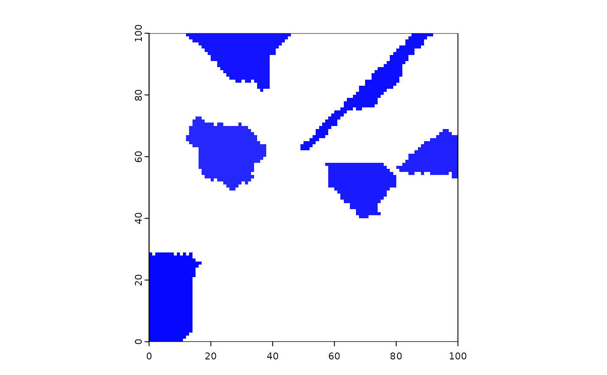
# initiate 10 fires
startCells <- as.integer(sample(1:ncell(emptyRas), 100))
fires <- spread(hab, loci = startCells, 0.235, persistence = 0, numNeighs = 2,
mask = NULL, maxSize = 1e8, directions = 8, iterations = 1e6, id = TRUE)
terra::plot(hab, type = "classes", legend = FALSE)
fires[fires == 0] <- NA
terra::plot(fires, add = TRUE, col = "red", type = "continuous", legend = FALSE)
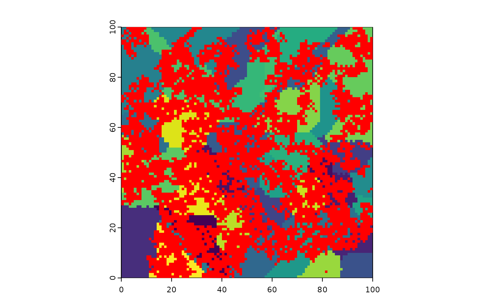
# Instead, to give a colour to the zero values, use \code{zero.color=}
coltab(fires) <- NULL
# need to specify "type" to get correct legend
terra::plot(fires, col = c(colorRampPalette(c("blue", "green"))(100)),
type = "continuous")
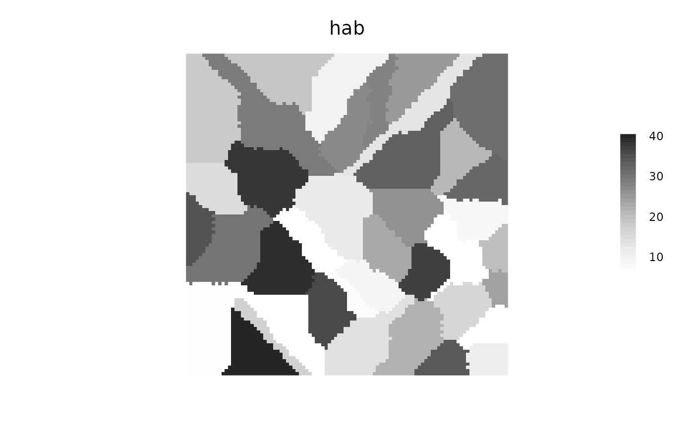
##------------------------------------------------------------------------------
## Continue event by passing interrupted object into spreadState
##------------------------------------------------------------------------------
## Interrupt a spread event using iterations - need `returnIndices = TRUE` to
## use outputs as new inputs in next iteration
fires <- spread(hab, loci = as.integer(sample(1:ncell(hab), 10)),
returnIndices = TRUE, 0.235, 0, NULL, 1e8, 8, iterations = 3, id = TRUE)
fires[, list(size = length(initialLocus)), by = id] # See sizes of fires
#> id size
#> 1: 1 1
#> 2: 2 4
#> 3: 3 6
#> 4: 4 2
#> 5: 5 9
#> 6: 6 11
#> 7: 7 6
#> 8: 8 11
#> 9: 9 11
#> 10: 10 9
fires2 <- spread(hab, loci = NA_real_, returnIndices = TRUE, 0.235, 0, NULL,
1e8, 8, iterations = 2, id = TRUE, spreadState = fires)
# NOTE events are assigned arbitrary IDs, starting at 1
## Use data.table and loci...
fires <- spread(hab, loci = as.integer(sample(1:ncell(hab), 10)),
returnIndices = TRUE, 0.235, 0, NULL, 1e8, 8,
iterations = 2, id = TRUE)
fullRas <- rast(hab)
fullRas[] <- 1:ncell(hab)
burned <- fires[active == FALSE]
burnedMap <- rasterizeReduced(burned, fullRas, "id", "indices")
terra::plot(burnedMap, type = "classes")
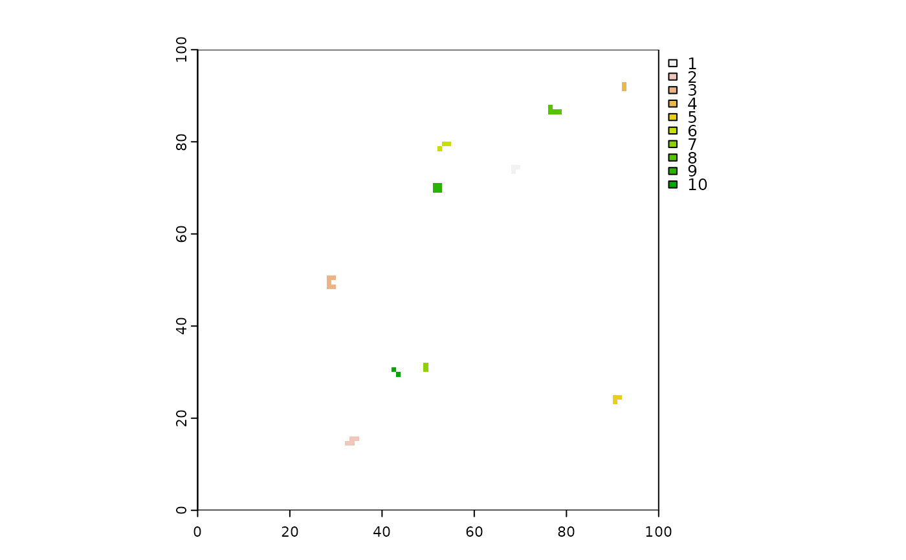
####################
## stopRule examples
####################
# examples with stopRule, which means that the eventual size is driven by the values on the raster
# passed in to the landscape argument. It won't be exact because the pixel values
# will likely not allow it
stopRule22 <- function(landscape) sum(landscape) > 100
set.seed(1234)
stopRule1 <- function(landscape) sum(landscape) > 50
stopRuleA <- spread(hab, loci = as.integer(sample(1:ncell(hab), 10)), 1, 0, NULL,
maxSize = 1e6, 8, 1e6, id = TRUE, circle = TRUE, stopRule = stopRule1,
stopRuleBehavior = "excludePixel")
tapply(hab[], stopRuleA[], sum) # all below 50
#> 0 1 2 3 4 5 6 7 8 9 10
#> 215048 37 44 38 38 27 50 33 30 33 36
set.seed(1234)
# using stopRuleBehavior = "excludePixel"
stopRuleB <- spread(hab, loci = as.integer(sample(1:ncell(hab), 10)), 1, 0, NULL,
maxSize = 1e6, 8, 1e6, id = TRUE, circle = TRUE, stopRule = stopRule22,
stopRuleBehavior = "excludePixel")
tapply(hab[], stopRuleB[], sum) # all below 100
#> 0 1 2 3 4 5 6 7 8 9 10
#> 214512 74 99 95 95 81 100 99 90 79 90
if (interactive())
terra::plot(c(stopRuleA, stopRuleB))
# Cellular automata shapes
# Diamonds - can make them with: a boolean raster, directions = 4,
# stopRule in place, spreadProb = 1
diamonds <- spread(hab > 0, spreadProb = 1, directions = 4, id = TRUE, stopRule = stopRule22)
terra::plot(diamonds)
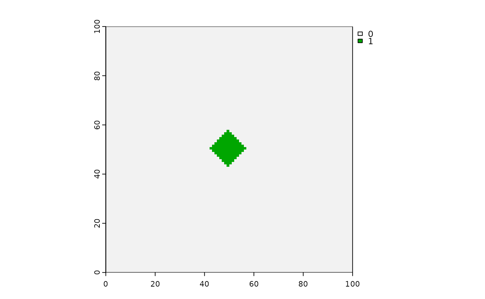
# Squares - can make them with: a boolean raster, directions = 8,
# stopRule in place, spreadProb = 1
squares <- spread(hab > 0, spreadProb = 1, directions = 8, id = TRUE, stopRule = stopRule22)
terra::plot(squares)
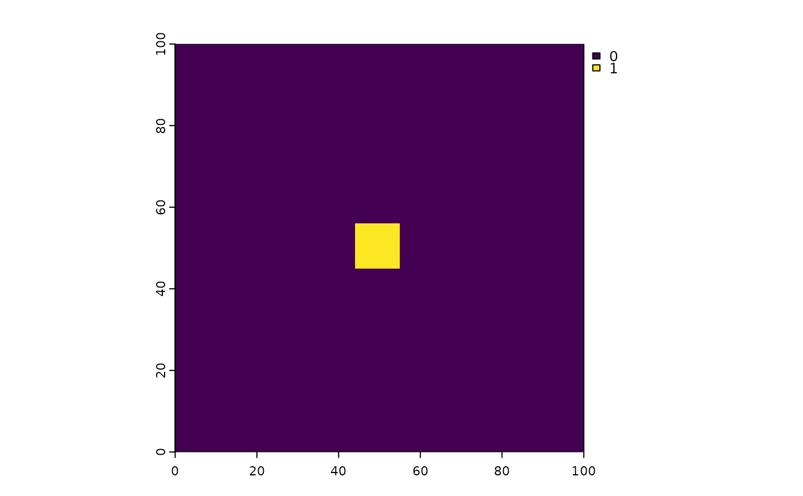
# Interference shapes - can make them with: a boolean raster, directions = 8,
# stopRule in place, spreadProb = 1
stopRule2 <- function(landscape) sum(landscape) > 200
squashedDiamonds <- spread(hab > 0, spreadProb = 1,
loci = (ncell(hab) - ncol(hab)) / 2 + c(4, -4),
directions = 4, id = TRUE, stopRule = stopRule2)
terra::plot(squashedDiamonds)
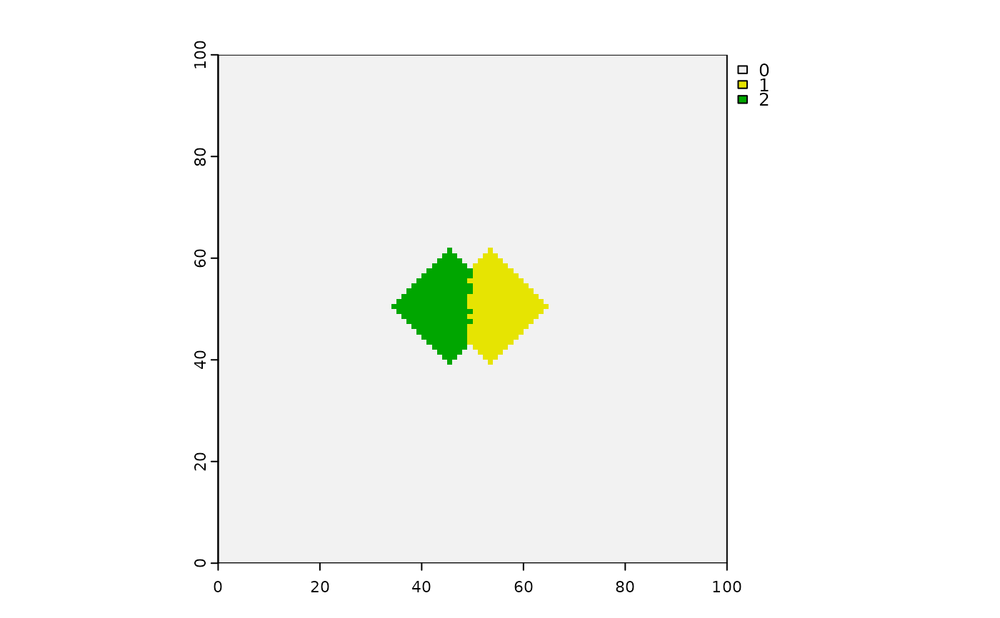
# Circles with spreadProb < 1 will give "more" circular shapes, but definitely not circles
stopRule2 <- function(landscape) sum(landscape) > 200
seed <- sample(1e4, 1)
set.seed(seed)
circlish <- spread(hab > 0, spreadProb = 1, iterations = 10,
loci = (ncell(hab) - ncol(hab)) / 2 + c(4, -4),
directions = 8, id = TRUE, circle = TRUE)#, stopRule = stopRule2)
if (interactive())
terra::plot(c(circlish))
set.seed(seed)
regularCA <- spread(hab > 0, spreadProb = 1, iterations = 10,
loci = (ncell(hab) - ncol(hab)) / 2 + c(4, -4),
directions = 8, id = TRUE)#, stopRule = stopRule2)
if (interactive()) # compare to circlish
terra::plot(regularCA)
####################
# complex stopRule
####################
initialLoci <- sample(seq_len(ncell(hab)), 2)
endSizes <- seq_along(initialLoci) * 200
# Can be a function of landscape, id, and/or any other named
# variable passed into spread
stopRule3 <- function(landscape, id, endSizes) sum(landscape) > endSizes[id]
set.seed(1)
twoCirclesDiffSize <- spread(hab, spreadProb = 1, loci = initialLoci,
circle = TRUE, directions = 8, id = TRUE,
stopRule = stopRule3, endSizes = endSizes,
stopRuleBehavior = "excludePixel")
# or using named list of named elements:
set.seed(1)
twoCirclesDiffSize2 <- spread(hab, spreadProb = 1, loci = initialLoci,
circle = TRUE, directions = 8, id = TRUE,
stopRule = stopRule3,
vars = list(endSizes = endSizes),
stopRuleBehavior = "excludePixel")
compareGeom(twoCirclesDiffSize, twoCirclesDiffSize2, res = TRUE,
stopOnError = FALSE)
#> [1] TRUE
terra::plot(c(twoCirclesDiffSize , twoCirclesDiffSize2))
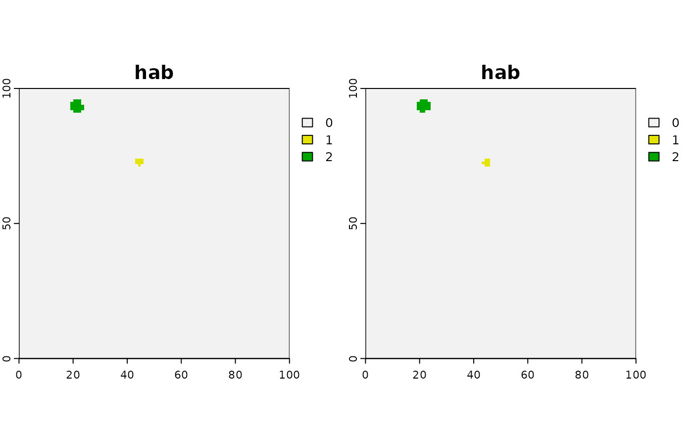
cirs <- values(twoCirclesDiffSize)
vals <- tapply(hab[][cirs > 0], cirs[cirs > 0], sum) # one is <200, other is <400 as per endSizes
# Stop if sum of landscape is big or mean of quality is too small
quality <- rast(hab)
quality[] <- runif(ncell(quality), 0, 1)
stopRule4 <- function(landscape, quality, cells) {
(sum(landscape) > 20) | (mean(values(quality)[cells]) < 0.3)
}
twoCirclesDiffSize <- spread(hab, spreadProb = 1, loci = initialLoci, circle = TRUE,
directions = 8, id = TRUE, stopRule = stopRule4,
quality = quality, stopRuleBehavior = "excludePixel")
## Using alternative algorithm, not probabilistic diffusion
## Will give exactly correct sizes, yet still with variability
## within the spreading (i.e., cells with and without successes)
seed <- sample(1e6, 1)
set.seed(seed)
startCells <- startCells[1:4]
maxSizes <- rexp(length(startCells), rate = 1 / 500)
fires <- spread(hab, loci = startCells, 1, persistence = 0,
neighProbs = c(0.5, 0.5, 0.5) / 1.5,
mask = NULL, maxSize = maxSizes, directions = 8,
iterations = 1e6, id = TRUE, plot.it = FALSE, exactSizes = TRUE)
all(table(fires[fires > 0][]) == floor(maxSizes))
#> [1] TRUE
terra::plot(fires)
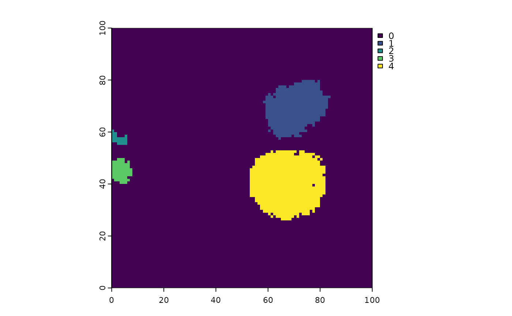
hist(fires[][fires[] > 0], main = "fire size distribution")
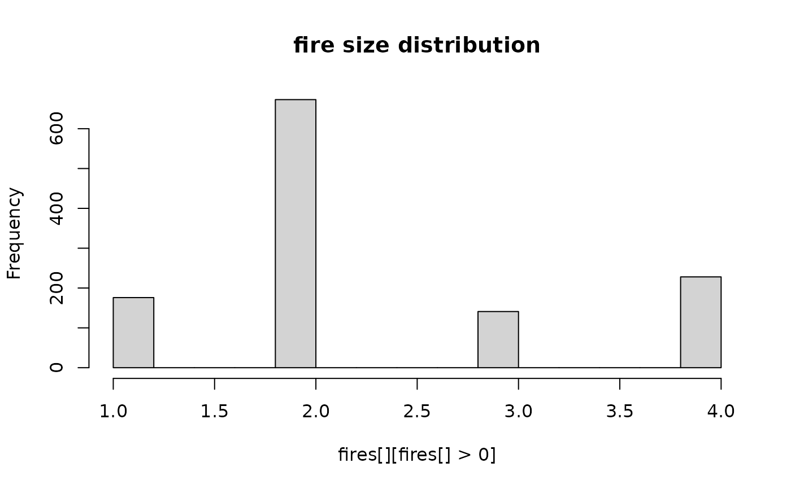
## Example with relativeSpreadProb ... i.e., a relative probability spreadProb
## (shown here because because spreadProb raster is not a probability).
## Here, we force the events to grow, choosing always 2 neighbours,
## according to the relative probabilities contained on hab layer.
##
## Note: `neighProbs = c(0,1)` forces each active pixel to move to 2 new pixels
## (`prob = 0` for 1 neighbour, `prob = 1` for 2 neighbours)
##
## Note: set hab3 to be very distinct probability differences, to detect spread
## differences
hab3 <- (hab < 20) * 200 + 1
seed <- 643503
set.seed(seed)
sam <- sample(which(hab3[] == 1), 1)
set.seed(seed)
events1 <- spread(hab3, spreadProb = hab3, loci = sam, directions = 8,
neighProbs = c(0, 1), maxSize = c(70), exactSizes = TRUE)
# Compare to absolute probability version
set.seed(seed)
events2 <- spread(hab3, id = TRUE, loci = sam, directions = 8,
neighProbs = c(0, 1), maxSize = c(70), exactSizes = TRUE)
terra::plot(events1)
 terra::plot(events2, col = c("white", "red", "red"))
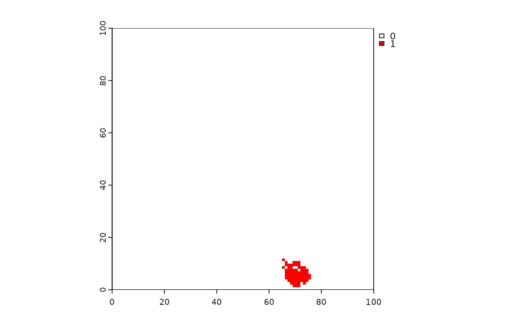
hist(events1[], breaks = 30, main = "Event size distribution") ## TODO: fix this plot
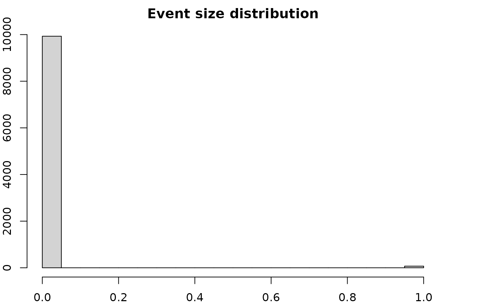
# Compare outputs -- should be more high value hab pixels spread to in event1
# (randomness may prevent this in all cases)
sum(hab3[events1[] > 0]) >= sum(hab3[events2[] > 0]) ## should be usually TRUE
#> [1] TRUE
# clean up
data.table::setDTthreads(origThreads)
terra::plot(events2, col = c("white", "red", "red"))
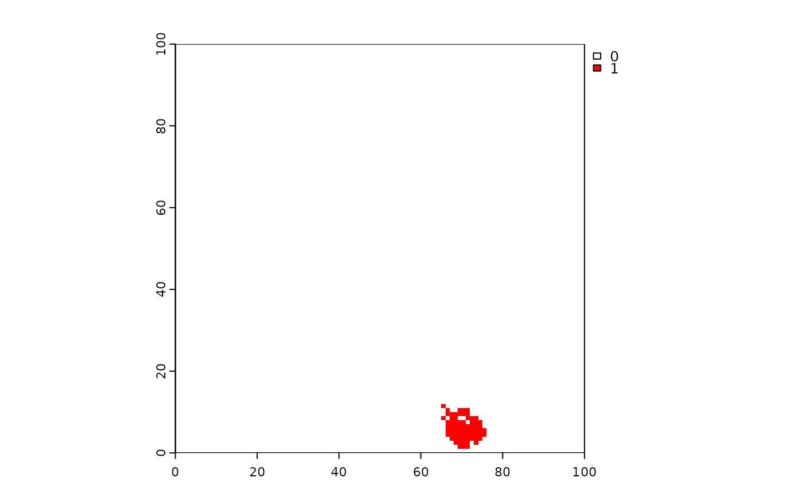
hist(events1[], breaks = 30, main = "Event size distribution") ## TODO: fix this plot
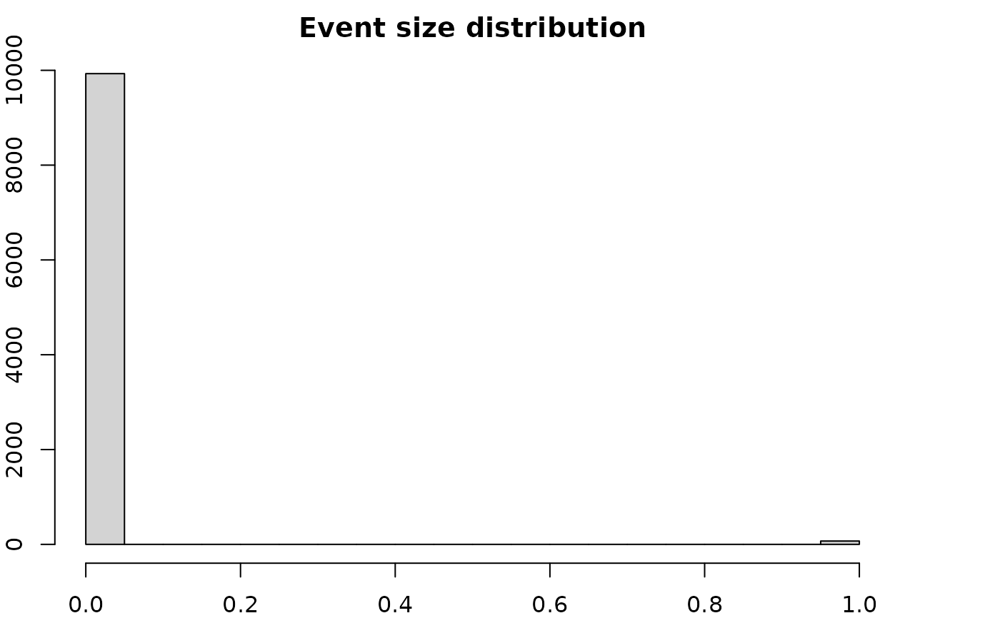
# Compare outputs -- should be more high value hab pixels spread to in event1
# (randomness may prevent this in all cases)
sum(hab3[events1[] > 0]) >= sum(hab3[events2[] > 0]) ## should be usually TRUE
#> [1] TRUE
# clean up
data.table::setDTthreads(origThreads)